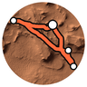

Jezero Crater, Mars. The planned Marswalk at true scale, with the get-home numbers in your helmet.
Loading the terrain…
Terrain: HiRISE DTM, NASA/JPL/UArizona/USGS · three.js, MIT · Astronaut: AI-generated 3D model (Higgsfield)